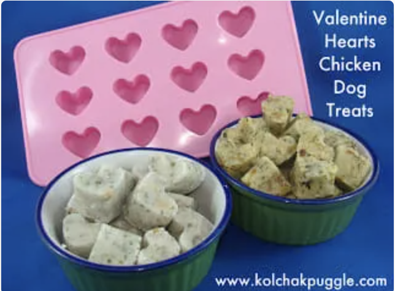

Natural Dog Treats
- Home
- Dog Health
- Natural Dog Treats
- About
Like humans, dogs need treats as well!!! Below are some yummy dog treat recipies that your puppy will surely enjoy!!! Click the links for the full recipes
Vegan Pumpkin Treats
Recipe:
- ¾ cup pumpkin puree
- ¼ cup peanut butter
- 2 tbsp ground flax meal
- 1 ⅓ cups oat flour
- ½ tsp cinnamon, optional
Chicken Dog Treats

Recipe:
- 1 cup of diced chicken
- ½ cup of cooked rice
- 3 tablespoons of rice flour
- 1 tablespoon of parsley
- 1 egg
Two Ingredient Dog Treats

Recipe:
- 2 cups of organic whole wheat flour
- 2 jars of pureed baby food
Frozen Apple Dog Treats
Recipe:
- 2 apples
- 1 cup of nonfat plain yogurt
- Some ice cube trays
Banana Almond Dog Treats

Recipe:
- 1 egg
- three-fourths cup unsalted almond butter
- one-third of a banana
- 1 teaspoon of cinnamon
SUBSCRIBE
CONTACT
2731 Dog Land Road, 52827
Treat Land, Treat World
thedogconfectionery@dogland.com